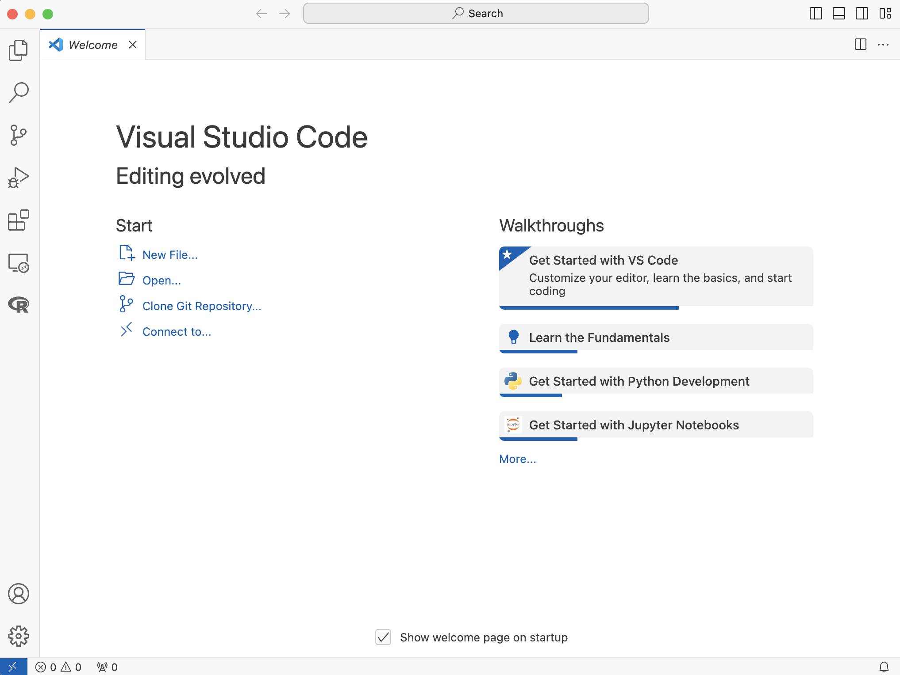
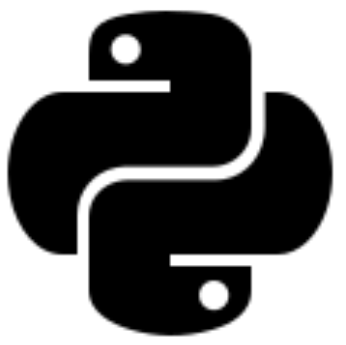
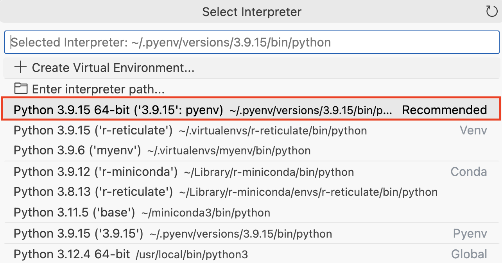
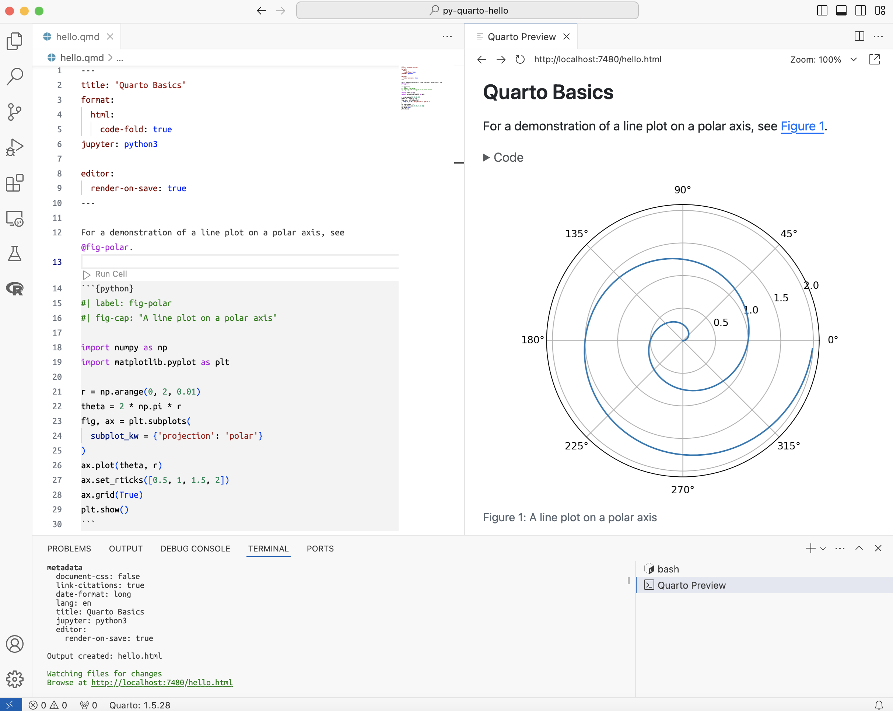

In Terminal
quarto --version
# 1.5.28I’ve been an avid R/RStudio (now Posit Workbench) user for over 15 years now, so a new IDE and programming language has taken some getting used to. This post covers setting up VS Code, potential sticky spots, learning pains, tips, and early successes.
If you haven’t already installed VS Code, download it from the official website and follow the installation instructions for your operating system. After installing VS Code, you’ll want to install the Quarto extension and Python extension from Microsoft.


Below we’ll cover configuring your Quarto installation in VS Code.

Quarto can be downloaded and installed from its official website. Follow the platform-specific instructions to install it on your system. Make sure Quarto has been installed correctly and is available in your system’s PATH.
Check if Quarto is on PATH:
quarto --version
# 1.5.28If it isn’t, you’ll need to add the location of your quarto installation to PATH. You can do that with the commands below (depending on your shell).
For Bash (common in Linux and older macOS versions):
echo 'export PATH="$PATH:/path/to/quarto"' >> ~/.bashrc
source ~/.bashrcFor Zsh (default in newer macOS versions):
echo 'export PATH="$PATH:/path/to/quarto"' >> ~/.zshrc
source ~/.zshrcYou can also use which to locate quarto path:
which quarto
# /usr/local/bin/quartoOn macOS, you can use find in the Terminal:
find / -name quarto 2>/dev/nullNow we’ll cover installing Python and making sure VS Code and Quarto can find it.

Installing python has always been a maze for me. I would find myself stuck on questions like, ‘Do I use conda, miniconda, pip?’ ‘Do I need to specify the version of pip (i.e., pip3 install)?’ ‘What version of python do I have installed?’ ‘Is it stored in PATH?’ The Python tutorial offered by VS Code clarified many of the issues I was having with Python. 1
For example, I typically work on macOS, so I use Homebrew to install Python 3:
brew install python3If you’re using Homebrew, it’s important to note the different locations for python installations. The which command is helpful here:
which python3
# /usr/bin/python3/usr/bin/python3 is the system-managed Python installation. It’s minimal and less likely to change, and is intended to ensure stability.
If you’re using Homebrew to install Python, you’ll probably notice there are other installations of Python in /usr/local/bin.2 I display these below using the tree command:
tree -P "python*" /usr/local/bin -L 2
# /usr/local/bin
# ├── python3 -> ../Cellar/python@3.12/3.12.3/bin/python3
# ├── python3-config -> ../Cellar/python@3.12/3.12.3/bin/python3-config
# ├── python3.12 -> ../Cellar/python@3.12/3.12.3/bin/python3.12
# └── python3.12-config -> ../Cellar/python@3.12/3.12.3/bin/python3.12-config
#
# 1 directory, 4 filesThe output above shows the files and the symbolic links they are referencing. The links are pointing to the actual binaries located under the ../Cellar/python@3.12/ directory.3
The symbolic links in /usr/local/bin are a modular approach to updating python. This is handy for user-installed environments where uninstallation or updates can be managed flexibly without disrupting the system’s core functionality.
I highly recommend running quarto check to confirm Python and the other dependencies have been installed. I’ve provided the output from my setup and a brief description below:
Quarto installation displays the path to the installation of the current Quarto version.
Quarto 1.5.28
[✓] Checking versions of quarto binary dependencies...
Pandoc version 3.1.11: OK
Dart Sass version 1.70.0: OK
Deno version 1.41.0: OK
Typst version 0.10.0: OK
[✓] Checking versions of quarto dependencies......OK
[✓] Checking Quarto installation......OK
Version: 1.5.28
Path: /Applications/quarto/bintools checks for a TinyTex installation (and installs it if its not there), Latex confirms the installation of LaTeX or TinyTex and displays the path (in this case, the path to the TinyTex installation), and basic markdown rendering is confirmed.
[✓] Checking tools....................OK
TinyTeX: (external install)
Chromium: 869685
[✓] Checking LaTeX....................OK
Using: TinyTex
Path: /Users/username/Library/TinyTeX/bin/universal-darwin
Version: 2023
[✓] Checking basic markdown render....OKPython 3 installation returns the python and jupyter versions, the python installation path, and kernels.
[✓] Checking Python 3 installation....OK
Version: 3.11.5 (Conda)
Path: /Users/username/miniconda3/bin/python
Jupyter: 5.7.2
Kernels: python3
[✓] Checking Jupyter engine render....OKNotice Quarto is using the python version installed in /Users/username/miniconda3/bin/python, not the /usr/bin/python3 version above.
R installation checks all the R stuff (LibPaths, knitr, rmarkdown)
[✓] Checking R installation...........OK
Version: 4.3.2
Path: /Library/Frameworks/R.framework/Resources
LibPaths:
- /Library/Frameworks/R.framework/Versions/4.3-x86_64/Resources/library
knitr: 1.46
rmarkdown: 2.26
[✓] Checking Knitr engine render......OKVS Code requires that we select a Python interpreter to run Python code. Do this by using the command palette (Cmd + Shift + P). Below are the multiple Python interpreters I can select from on my machine:4

If I run which python3 in the terminal inside VS Code, I see the python version is stored in /Users/username/.pyenv/versions/:
which python3
# /Users/username/.pyenv/versions/3.9.15/bin/python3But when I run which python3 in a Terminal outside of VS Code, I see the following:
which python3
# /Users/username/miniconda3/bin/python3The differences in Python versions when running which python3 in the VS Code Terminal versus the macOS Terminal are due to distinct Python environments being picked up by each terminal session. This is a common situation caused by different environment settings, specifically the PATH environment variable, and potentially Python version management configurations.
pyenv)In the VS Code Terminal, which python3 uses Python installed via pyenv, a popular version management tool used to manage multiple Python versions. pyenv is a simple Python version management tool that allows you to easily switch between multiple versions of Python. It focuses primarily on managing different versions of the Python interpreter.
Pyenv modifies the PATH to prioritize its versions of Python over system-installed versions (like the one stored in /usr/bin/python3).
/Users/username/.pyenv/versions/3.9.15/bin/python3miniconda3)The output from which python3 in the macOS terminal indicates it’s using Python from a Conda environment.. Miniconda is a popular package, dependency, and environment management system which is typically used for scientific computing and data science, where managing complex dependencies is crucial. The miniconda environment has its own isolated directory, separate from the system-wide installations.
/Users/username/miniconda3/bin/python3The primary reason for the differences is how the PATH environment variable is set up in each terminal instance. VS Code’s terminal is configured to add the pyenv managed Python to the PATH ahead of the Conda managed version, resulting in the pyenv version being used when which python3 is executed.
| Feature | Pyenv | Miniconda |
|---|---|---|
| Python Version Management | Yes | Yes |
| Virtual Environment | Yes (with pyenv-virtualenv) | Yes |
| Package Management | Basic (via pip) | Advanced (via Conda) |
| Cross-Language Support | No | Yes |
| Dependency Management | Limited | Robust |
| Ideal for Simple Projects | Yes | No |
| Ideal for Complex Projects | No | Yes |
| Multi-Language Support | No | Yes |
miniconda: Generally creates and manages self-contained environments that include Python and other dependencies. It modifies the PATH within the shell it’s activated in, which might be automatically configured in your standard macOS Terminal.
pyenv: Manages multiple Python versions by manipulating the PATH environment variable and does not concern itself with non-Python dependencies.
Now I can create the Quarto document (hello.qmd) following the introduction on the Quarto website, I end up with the following YAML header, python code, and output:

Rami Krispin also has a great guide for setting up Python and Docker in VS Code. The Quick Start Guide for Python in VS Code has a lot of information (and .gifs!). Eric Nantz also has a fantastic and thorough Setting up my Quarto adventures! video on the Shiny Developer Series YouTube channel, too.
/usr/local/bin is commonly used for user-installed software, separate from the system’s default utilities.↩︎
This is typical of Homebrew installations on macOS, where Homebrew installs software under /usr/local/Cellar and creates symlinks in /usr/local/bin for easy execution.↩︎
The path of the recommended interpreter is ~/pyenv/versions/3.9.15/bin/python.↩︎